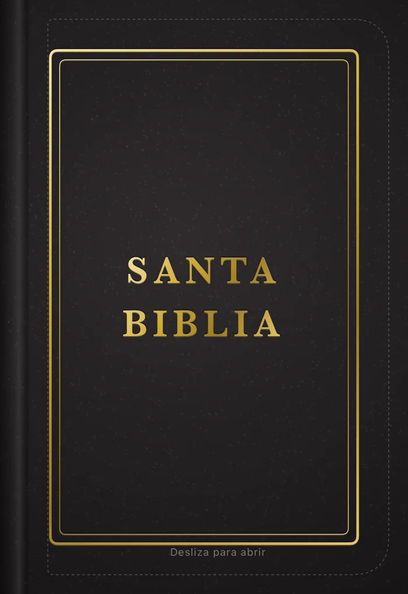
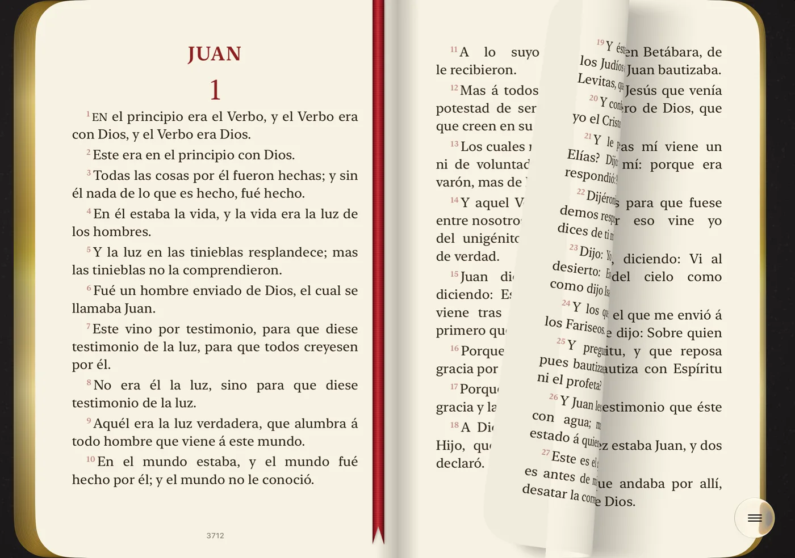
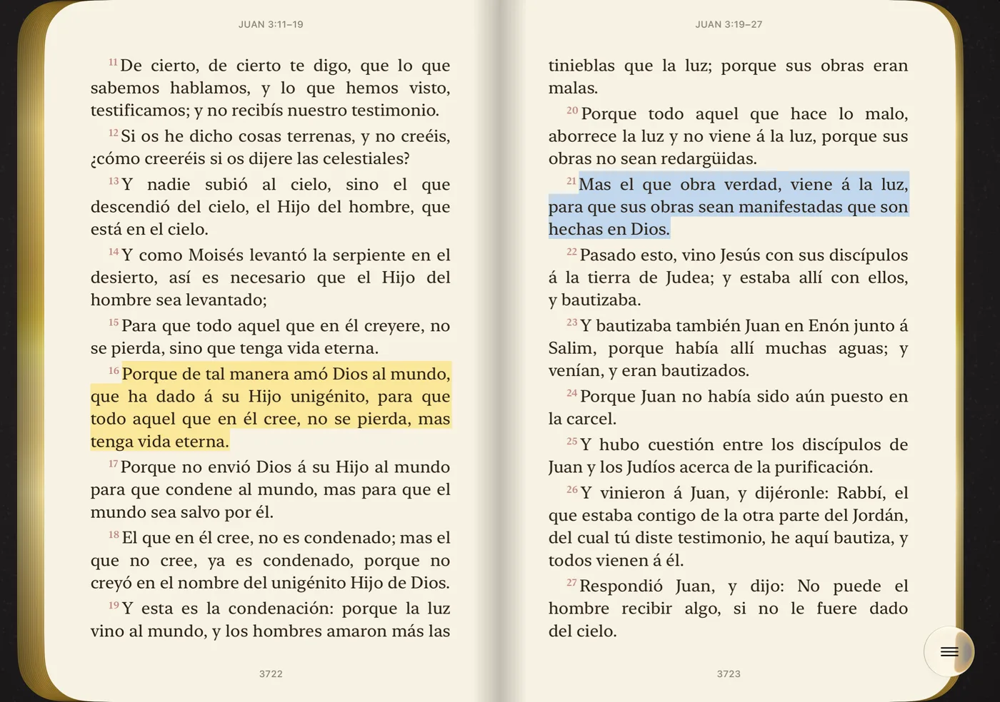
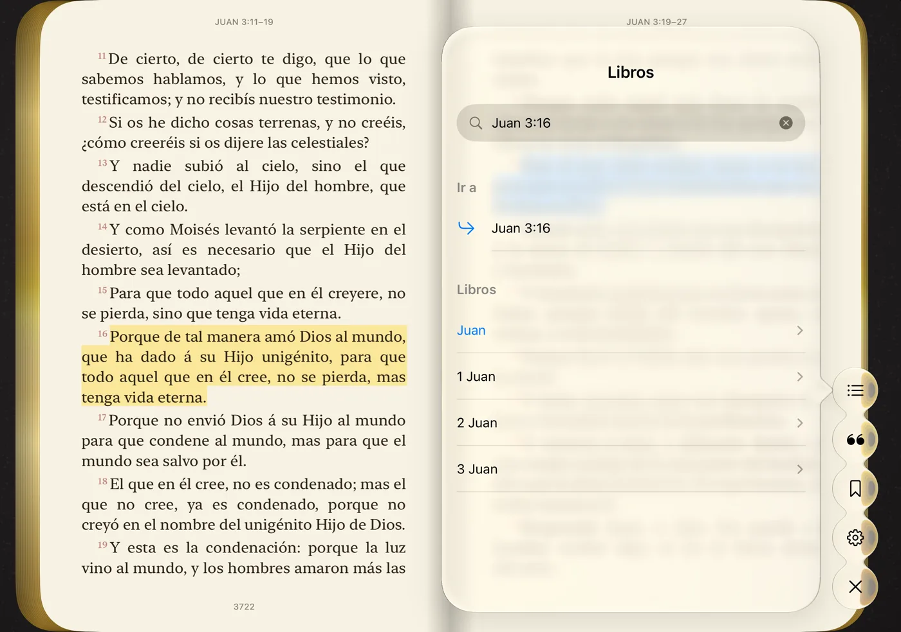

Cerrado, la cubierta. Abierto, el libro.
Con el iPhone Duo cerrado, la pantalla exterior muestra la cubierta de piel de tu Biblia. Deslízala para abrirla y lee una página a la vez. Abre el iPhone Duo y la Biblia aparece abierta en dos páginas, como la que tienes junto a la cama.

Pasa la página con el dedo
Las hojas se curvan bajo tu dedo, con la luz y la sombra del papel. Los cantos dorados muestran cuánto has leído, y una cinta de tela guarda tu lugar.

Resalta lo que te habla
Toca y mantén una palabra para resaltar el versículo en uno de cuatro colores. Cada resaltado se convierte en una cita para releer y compartir.

Encuentra cualquier versículo
Los 66 libros y todos los capítulos, con búsqueda. Escribe Juan 3:16 y ve directo al texto.

A tu manera
Cuatro estilos de cubierta, seis colores de piel, seis iconos, tema claro y oscuro y el tamaño de letra que mejor le quede a tus ojos.
Sin internet y sin anuncios
Funciona en el avión, en la iglesia y donde no hay señal. Sin anuncios ni distracciones.
Tu lectura es solo tuya
Sin cuenta y sin recopilar datos. Tus resaltados se quedan en tu iPhone.
Tres traducciones completas
- Español: Reina-Valera 1909
- English: King James Version (KJV)
- Português: Bíblia Livre, basada en la traducción Almeida
Antiguo y Nuevo Testamento, los 66 libros. El idioma se cambia en Ajustes.
Descarga Santa Biblia Fold
Gratis en la App Store. Hecha solo para el iPhone Duo, con iOS 27.1 o posterior.